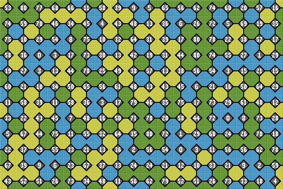

3-corner Wang Tileset
The complete set contains (3^4) = 81 tiles, colored blue, yellow and green. (This can be thought of as increasing height of water, sand and grass terrain). The outer edge of each tile is marked, but not the boundary between similar colors on the same tile.
Here is the complete 3-corner Wang tileset.
| 0 | 1 | 2 | 3 | 4 | 5 | 6 | 7 | 8 | 9 | 10 | 11 | 12 | 13 | 14 | 15 | 16 |
| 17 | 18 | 19 | 20 | 21 | 22 | 23 | 24 | 25 | 26 | 27 | 28 | 29 | 30 | 31 | 32 | 33 |
| 34 | 35 | 36 | 37 | 38 | 39 | 40 | 41 | 42 | 43 | 44 | 45 | 46 | 47 | 48 | 49 | 50 |
| 51 | 52 | 53 | 54 | 55 | 56 | 57 | 58 | 59 | 60 | 61 | 62 | 63 | 64 | 65 | 66 | 67 |
| 68 | 69 | 70 | 71 | 72 | 73 | 74 | 75 | 76 | 77 | 78 | 79 | 80 |
Tileset Packing Layout
In a packing layout each tile is used once only. For 81 tiles, a common layout is a 9x9 square array. Here are 2 possible 9x9 layouts of the complete Wang 3-edge tileset.
Recursive (fractal) Layout
|
|

Symmetrical LayoutHere is a left-right symmetrical layout of all 81 tiles. All borders wrap, so both arrays can cover any area seemlessly. See 4-order tilesets for 4-edge layoust. |
|

Bitwise Tile Index
The following method creates a unique number for each tile.
Ignore blue corners. Add up yellow and green corners with the following tertiary weighting:
Yellow NorthEast corner = 1 Green NorthEast corner = 2 Blue corners are ignored. |
This tile has 'Green SouthEast' + 'Yellow NorthWest', so, 6 + 27, giving a tile index of '33'. |
Tile Rotation Symmetry
By removing self similar rotations, we reduce the 3-corner Wang tileset to 24 tiles. Wang tiles are never rotated but this is a compact way of showing the complete tileset.
| 0 | 40 | 80 | 10 30 |
20 60 |
50 70 |
1 3 9 27 |
2 6 18 54 |
39 37 31 13 |
41 43 49 67 |
78 74 62 26 |
79 77 71 53 |
| 4 12 36 28 |
8 24 72 56 |
44 52 76 68 |
5 15 45 55 |
7 21 63 29 |
38 34 22 66 |
42 46 58 14 |
73 59 17 51 |
75 65 35 25 |
16 48 64 32 |
23 69 47 61 |
33 19 57 11 |
The index numbers below each tile denote a rotation of 90° clockwise. This can be useful when creating tilesets in Photoshop. Rotate and SaveAs the next tile number.
For more bitwise maths see 'Flip' and 'Rotate' in the Glossary.
We can create a tile matching puzzle game from a set of these tiles. See Puzzles.
Stage: Wang 3-corner Tiles
Campus
From the above Wang tiles, a simple design can be constructed where each Wang tile corner color determines a different height of terrain.
Blue - middle/ground, Yellow - high level and Green - low level.
| 0 | 1 | 2 | 3 | 4 | 5 | 6 | 7 | 8 | 9 | 10 | 11 | 12 | 13 | 14 | 15 | 16 |
| 17 | 18 | 19 | 20 | 21 | 22 | 23 | 24 | 25 | 26 | 27 | 28 | 29 | 30 | 31 | 32 | 33 |
| 34 | 35 | 36 | 37 | 38 | 39 | 40 | 41 | 42 | 43 | 44 | 45 | 46 | 47 | 48 | 49 | 50 |
| 51 | 52 | 53 | 54 | 55 | 56 | 57 | 58 | 59 | 60 | 61 | 62 | 63 | 64 | 65 | 66 | 67 |
| 68 | 69 | 70 | 71 | 72 | 73 | 74 | 75 | 76 | 77 | 78 | 79 | 80 |
See Terrain Tiles for more info and images.
See Stage for random terrain arrays.
Campus symmetrical layoutThis is how a campus building would look if built symetrically using 3 levels. As the edges wrap, it can tile any area seamlessly. |
|

Reduced (sub) Tilesets
If the tiles are limited to just 2 colors then there are 3 posssible reduced tilesets of 16 tiles. The following table shows a Blue & Yellow, Yellow & Green and a Blue & Green tileset.
| 0 | 1 | 2 | 3 | 4 | 5 | 6 | 7 | 8 | 9 | 10 | 11 | 12 | 13 | 14 | 15 |
| 0 | 1 | 3 | 4 | 9 | 10 | 12 | 13 | 27 | 28 | 30 | 31 | 36 | 37 | 39 | 40 |
| 40 | 41 | 43 | 44 | 49 | 50 | 52 | 53 | 67 | 68 | 70 | 71 | 76 | 77 | 79 | 80 |
| 0 | 2 | 6 | 8 | 18 | 20 | 24 | 26 | 54 | 56 | 60 | 62 | 72 | 74 | 78 | 80 |
Renaming the tiles from 0 to 15 and placing in the usual 2-corner layout produces the following three tilesets.
The Yellow & Green tileset has an index of +40 Blue & Yellow.
The Blue & Green tileset has an index of twice Blue & Yellow.
The remaining 36 tiles (81 - 3x15) all contain a mixture of all 3 terrain levels.
| 5 | 7 | 11 | 14 | 15 | 16 | 17 | 19 | 21 | 22 | 23 | 25 |
| 29 | 32 | 33 | 34 | 35 | 38 | 42 | 45 | 46 | 47 | 48 | 51 |
| 55 | 57 | 58 | 59 | 61 | 63 | 64 | 65 | 66 | 69 | 73 | 75 |
Stage: Campus